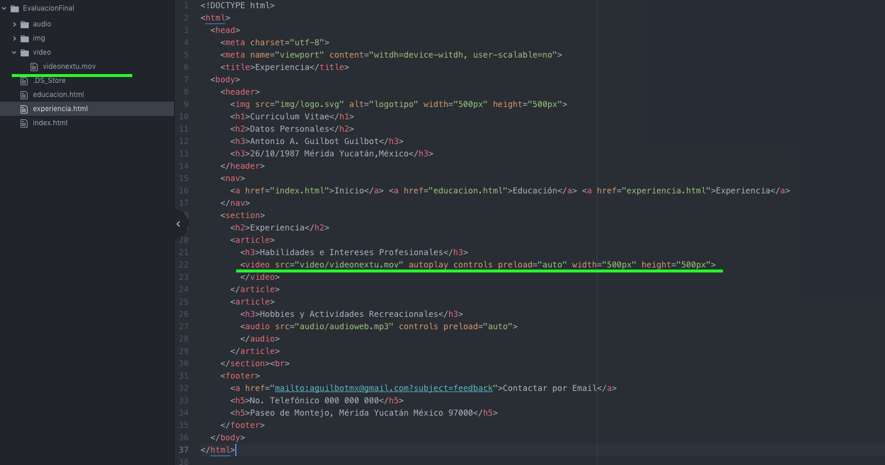

Habilidades e Intereses Profesionales
Comentario sobre video:
Debido a los pesado del video, se tomó la decisión de utilizar Iframe debido a que las distintas opciones de compresión en línea, generaban incompatibilidad de lectura. Sin embargo tengo que destacar y puntualizar, que se cuenta con los conocimientos para utilizar el elemento de video.
a continuación comparto la captura de pantalla de mi código en atom donde se demuestra el uso del elemento de video.
